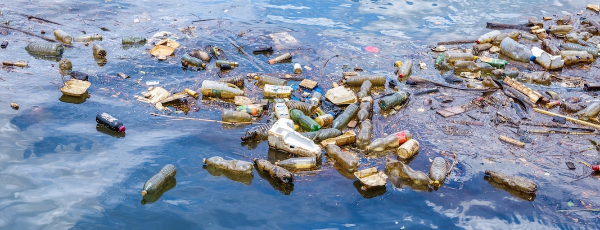
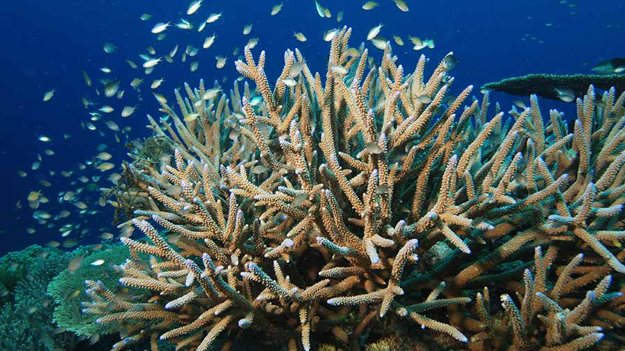
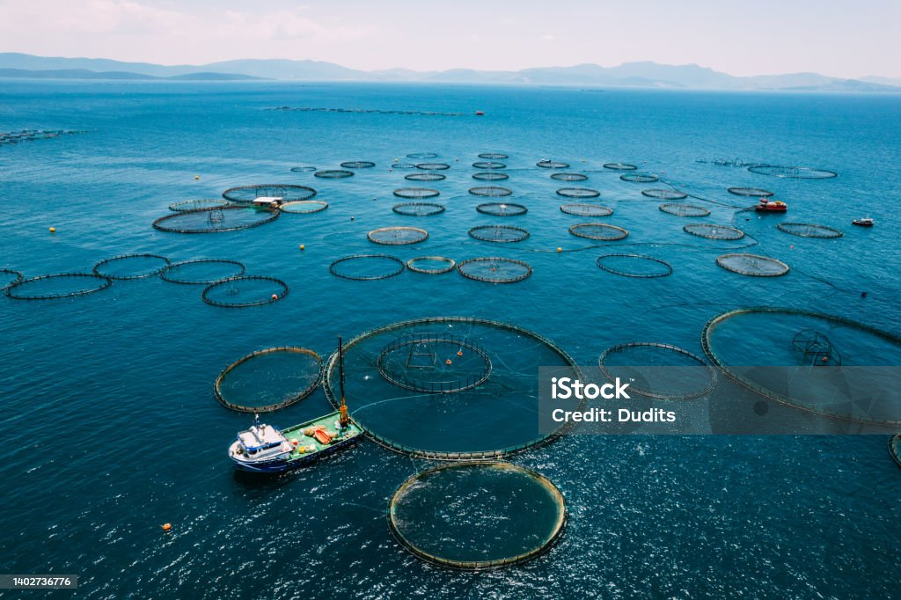

Our Mission: Protect Life Below Water
We aim to raise awareness and inspire action to protect marine ecosystems from pollution, climate change, and human impact. Our goal is to empower students and communities to make sustainable choices that preserve ocean life for future generations.

Reduce Marine Pollution
Every year, millions of tons of plastic waste enter the oceans, posing a serious threat to marine life and ecosystems. Animals often ingest or become entangled in plastic, leading to injury or death, while smaller particles like microplastics spread through the food chain and impact overall ocean health. This pollution also damages habitats such as coral reefs and releases harmful chemicals into the water. Reducing marine pollution is essential to protect biodiversity, sustain ecosystems, and ensure a healthier ocean for future generations.
- Avoid single-use plastics
- Recycle and dispose waste properly
- Participate in beach clean-ups

Combat Ocean Warming
Rising global temperatures are putting immense stress on marine ecosystems, particularly coral reefs, which are highly sensitive to even slight changes in water temperature. This leads to coral bleaching, where corals lose the symbiotic algae that provide them with nutrients and color, often resulting in widespread reef degradation. As coral reefs serve as vital habitats for a diverse range of marine species, their decline disrupts entire ecosystems and threatens the livelihoods of communities that depend on fishing and tourism. Addressing climate change is therefore essential to protect ocean biodiversity, maintain ecological balance, and safeguard global food sources for future generations.
- Reduce energy consumption
- Use sustainable transportation
- Support eco-friendly initiatives

Combat Overfishing
Overfishing places immense pressure on marine populations by removing fish faster than they can reproduce, leading to declining stocks and, in some cases, species collapse. This imbalance disrupts ocean food chains, affecting not only targeted species but also predators and other organisms that rely on them. Destructive fishing practices can further damage habitats such as coral reefs and seabeds, reducing biodiversity and ecosystem resilience. Adopting sustainable fishing methods is essential to allow marine life to recover, maintain healthy ecosystems, and ensure long-term food security for communities that depend on the ocean.
- Choose sustainably sourced seafood
- Avoid overconsumed species
- Support local responsible fisheries